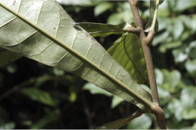
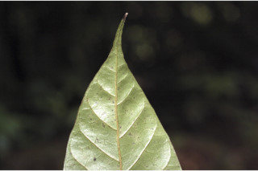
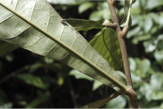
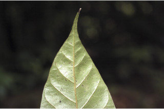

Large trees, up to 35 m tall.
35 ಮೀ ಎತ್ತರದವರೆಗೂ ಬೆಳೆಯುವ ಮಹಾವೃಕ್ಷಗಳು
35 മീറ്റര് വരെ ഉയരത്തില് വളരുന്ന വന്മരങ്ങള്
பெரிய மரம் 35 மீ. உயரம் வரை வளரக்கூடியது.
Bark smooth; blaze light brown.
ತೊಗಟೆ ನಯವಾದ ಮೇಲ್ಮೈ ಹೊಂದಿದ್ದು ಕಂದು ಬಣ್ಣದ ಕಚ್ಚುಗಳನ್ನು ಹೊಂದಿರುತ್ತದೆ
മിനുസമാര്ന്ന പുറംതൊലി; വെട്ട്പാടിന് ഇളം തവിട്ട് നിറം.
மரத்தின் பட்டை வழுவழுப்பானது; உள்பட்டை வெளிறிய அரக்கு (ப்ரவுன்) நிறம்.
Branchlets minutely pubescent when young
ಎಳೆಯ ಕೊಂಬೆಗಳು ಸೂಕ್ಷ್ಮವಾಗಿ ಹರಡಿರುವ ಮೃದು ತುಪ್ಪಳವನ್ನು ಹೊಂದಿರುತ್ತದೆ.
ഉപശാഖകള് ഇളതായിരിക്കുമ്പോള് നനുത്ത രോമിലമായിരിക്കും.
சிறிய நுனிக்கிளைகள் உரோமங்களுடையது.
Latex acrid, watery, gradually turning black.
ಜಿನುಗುದ್ರವ ಜಲರೂಪಿಯಾಗಿದ್ದು ಕ್ರಮೇಣ ಕಪ್ಪುಬಣ್ಣಕ್ಕೆ ತಿರುಗುತ್ತದೆ.
സാവധാനം കറുത്തതായി മാറുന്ന ജലമയ സ്രവം.
தண்ணீரை போன்றது, மெதுவாக கருப்பு நிறத்திற்கு மாறிவிடும்.
Leaves simple, alternate, spiral, clustered at twig ends; petiole 0.2-0.7 cm long, stout, flat above, glabrous; lamina 8-28 x 2.2-7 cm long, oblanceolate, apex acuminate with blunt tip, base auriculate, subcoriaceous; midrib flat or slightly impressed above; nerves and reticulation raised on both surface; secondary_nerves 7-18 pairs, nearly straight and curved near margin, moderate in angle; tertiary_nerves reticulate.
ಎಲೆಗಳು ಕುಡಿ ಕೊಂಬೆಗಳ ತುದಿಯಲ್ಲಿ ಗುಂಪಾಗಿದ್ದು, ಸರಳ ರೀತಿಯವಾಗಿದ್ದು ಪರ್ಯಾಯ ಸುತ್ತು ಜೋಡನಾ ವ್ಯವಸ್ಥೆಯಲ್ಲಿರುತ್ತವೆ. ಎಲೆ ತೊಟ್ಟುಗಳು 0.2ರಿಂದ 0.7 ಸೆ.ಮೀ. ಉದ್ದ ಹೊಂದಿದ್ದು, ರೋಮರಹಿತ ಹಾಗೂ ದೃಢವಾಗಿದ್ದು ಮೇಲ್ಭಾಗದಲ್ಲಿ ಚಪ್ಪಟೆಯಾಗಿರುತ್ತವೆ. ಎಲೆಪತ್ರ 8-28 × 2.2-7 ಸೆ.ಮೀ. ಗಾತ್ರ, ಬುಗುರಿ-ಈಟಿ ಆಕಾರ ಹೊಂದಿದ್ದು ಮೊಂಡು ತುದಿಉಳ್ಳ ಕ್ರಮೇಣ ಚೂಪಾಗುವ ತುದಿ, ಕಿವಿಯಾಕಾರದ ಚಾಚುಳ್ಳ ಬುಡವನ್ನು ಹೊಂದಿರುತ್ತದೆ.; ಪತ್ರದ ಮೇಲ್ಮೈ ಉಪ-ತೊಗಲಿನ ಮಾದರಿಯಲ್ಲಿರುತ್ತದೆ; ಮಧ್ಯ ನಾಳಗಳು ಮತ್ತು ಜಾಲಬಂಧವಿನ್ಯಾಸದಲ್ಲಿನ ನಾಳಗಳು ಎಲೆ ಪತ್ರದ ಮೇಲ್ಭಾಗ ಮತ್ತು ತಳಭಾಗದಲ್ಲಿ ಉಬ್ಬಿಕೊಂಡಿರುತ್ತವೆ. ಎರಡನೇ ದರ್ಜೆಯ ನಾಳಗಳು 7 ರಿಂದ 18 ಜೋಡಿಗಳಿದ್ದು ಬಹುಮಟ್ಟಿಗೆ ನೇರವಾಗಿದ್ದು ಪತ್ರದ ಅಂಚಿನ ಬಳಿ ತಿರುವಿಕೊಂಡಿದ್ದು ಮಿತವಾದ ಕೋನದಲ್ಲಿರುತ್ತದೆ. ಮೂರನೇ ದರ್ಜೆಯ ನಾಳಗಳು ಜಾಲಬಂಧ ನಾಳ ವಿನ್ಯಾಸದವು.
ഇലകള് ലഘുവും, സര്പ്പിളാകൃതിയില്, കമ്പുകളുടെ അറ്റത്തായി ഏകാന്തരക്രമത്തില്, കൂട്ടമായി ക്രമീകരിച്ചിരിക്കുന്നതുമാണ്; ഇല ഞെട്ടുകള് ദൃഢവും 0.2 മുതല് 0.7 സെ.മീ വരെ നീളവും മുകള്ഭാഗം പരന്നും അരോമിലവുമായിരിക്കുന്നു; പത്രഫലകത്തിന് 8 മുതല് 28 സെ.മീ. വരെ നീളവും 2.2 മുതല് 7 സെ.മീ. വരെ വീതിയും, അപകുന്താകാരവും, മുനപ്പില്ലാത്ത ദീര്ഘാഗ്രവും, പത്രാധാരം ചെവിയോട് കൂടിയതുമാണ്, ഉപചര്മ്മില പ്രകൃതം, മുഖ്യസിര മുകളില് പരന്നോ, ഒരല്പം ഉയര്ന്നോ കാണുന്നു; ഇരുവശത്തും ഉയര്ന്ന് നില്ക്കുന്ന ഞരമ്പുകളും ജാലികകളും; ഇടത്തരം കോണോടുകൂടിയ, 7 മുതല് 18 ജോഡി വരെ ദ്വിതീയ ഞരമ്പുകള് ഏതാണ്ട് നേരെയും അരികുകള്ക്കടുത്ത് വളഞ്ഞുമിരിക്കുന്നു; ജാലിക തീര്ക്കുന്ന ത്രിതീയ ഞരമ്പുകള്.
இலைகள் தனித்தவை, மாற்றுஅடுக்கமானவை, சுழல் போன்று அமைந்தவை; நுனிக்கிளையில் இலைகள் கூட்டமாக மற்றும் நெருக்கமாகமைந்தவை; இலைக்காம்பு 0.2-0.7 செ.மீ. நீளமானது, தடிமனானது, குறுக்குவெட்டுத் தோற்றத்தில் பிளேனோகான்வக்ஸ், உரோமங்களற்றது, இலை அலகு 8-28 X 2.2-7 செ.மீ., நீளமானது, தலைகீழ் ஈட்டி வடிவம், அலகின் நுனி அதிக்கூரியது மற்றும் முனை மழுங்கலானது, அலகின் தளம் செவி வடிவானது, சப்கோரியேசியஸ்; மையநரம்புகள் மேற்புறத்தில் இலையின் பரப்பிற்கு சமமானது அல்லது சிறிது பள்ளமானது; நரம்புகள் மற்றும் வலை போன்ற அமைப்பு ஏற்படுத்தும் மூன்றாம் நிலை நரம்புகள் மேற்பகுதியிலும், கீழ்பரப்பிலும் இலையின் பரப்பைவிட உயர்ந்தது; இரண்டாம் நிலை நரம்புகள் 7-18 ஜோடிகள், ஒன்றுக்கொன்று இணைக்கோடுகள் போலவும் இலை அலகின் விளிம்பில் மிதமான வளைவுடன் காணப்படும்; மூன்றாம் நிலை நரம்புகள் வலைபின்னல் அமைப்பு கொண்டது.
Inflorescence axillary panicle, 7-15 cm long; flowers polygamous.
ಪುಷ್ಪ 7 ರಿಂದ 15 ಸೆ.ಮೀ ಉದ್ದವಿರುತ್ತದೆ. ಅಕ್ಷಾಕಂಕುಳಿನಲ್ಲಿರುವ ಪುನರಾವೃತ್ತಿಯಾಗಿ ಕವೆಲೊಡೆವ ಅನಿಯತ ಮಧ್ಯಾಭಿಸಕರ ಪುಷ್ಪ ಮಂಜರಿಗಳು ಏಕಲಿಂಗಿ ಪುಷ್ಪಗಳನ್ನೊಳಗೊಂಡಿರುತ್ತವೆ.
പൂങ്കുലകള് 7 മുതല് 15 സെ.മീ. വരെ നീളമുള്ള കക്ഷീയ, പാനിക്കിളുകളാണ്, പൂക്കള് ഏകലിംഗികളാണ്.
மஞ்சரி தண்டின் இலைக்கோணங்களில் அமைந்த பேனிக்கிள், 7-15 செ.மீ. நீளமானது, மலர்கள் ஒர்பாலானவை.
Drupe, obliquely obovate, black, seated on fleshy obconic hypocarp, 1-seeded.
ಕಾಯಿಗಳು ಡ್ರೂಪ್ ಮಾದರಿಯಲ್ಲಿದ್ದು ಒಂದು ಬೀಜವನ್ನು ಹೊಂದಿರುತ್ತವೆ. ಆಕಾರದಲ್ಲಿ ಓರೆಯಾದ ಬುಗುರಿಯನ್ನು ಹೋಲುವ ಕಾಯಿಗಳು ತೆಳಕೆಳಗಾದ ಹೈಪೋಕಾರ್ಪ್ ಮೇಲೆ ಆಸೀನವಾಗಿರುತ್ತವೆ.
അപകോണാകാര ഹൈപോകാര്പ്പില് ഉറച്ചിരിക്കുന്ന കായ, ചരിഞ്ഞ അണ്ഡാകാരത്തോടു് കൂടിയ, ഒറ്റ വിത്തുള്ള കറുത്ത അഭ്രകം ആണ്.
உள்ளோட்டுத்தசைகனி (ட்ரூப்), சமச்சீரற்ற தலைகீழ் முட்டை வடிவம், கருப்பு நிறம், கனி பூத்தண்டு கின்னம் மேல் அமர்ந்திருக்கும், ஒரு விதையுடன் காணப்படும்.


 


